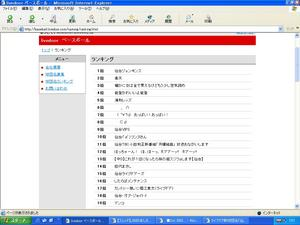
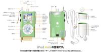

[ニュー速＋] 【社会】 「ｉＰｏｄだけじゃなく、パソコンも対象に」 ＪＡＳＲＡＣ、補償金制度で
153 Name： 名無しさん＠６周年 [] Date： 2006/05/18(木) 21:05:51 ID: 0JVsFfIj0 Be:
JASRACへ上納構造
レンタルする⇒気に入ったのでCD買う⇒PCに録音⇒iPodに転送⇒車用にコピーのCD作る⇒仕事場で流す⇒カラオケで唄う
↑ ↑ ↑ ↑ ↑ ↑ ↑
搾取 搾取 搾取 搾取 搾取 搾取 搾取
[ニュー速+] 【社会】 「自衛隊、撤退しないで」 来日中のサマワ市長ら、会見で日本の早期撤退方針変更を求める
268 名前：名無しさん＠６周年[sage] 投稿日：2006/03/31(金) 01:13:50 ID:ENc99IpP0
>3
「初めまして、ぼく、自衛隊といいます。よろしく」
「はいはい、よろしく（ふん、金満の異教徒のクセに生意気よ！
嫌がらせして追い出してやるんだから！）」
「えー！？ 土地代が必要なんて聞いてないよ！」
「あんたがぼーっとしてるからよ！ さっさと払うか帰るかしなさい！」
「そ、そんなこといわれても……」
「しつっこいわね！」
ばちーん！（←（迫撃砲）
「くっ……でも……君にぶたれたって、ぼくはきみを守る、守ってみせる！」
「……勝手にして！（や、やだ、なによこの胸の痛みは……）」
「はい、水だよ。君の大好きな『キャプテン翼』の水筒に入れてきたんだけど、どう？」
「わぁ！あ、ありが……べっ別に感謝なんかしてないんだからね！」
「ごめん、上からの命令でね。ぼくは日本に帰らなきゃいけないんだ」
「！ そ、そうなの……。ね、ねぇ、それって断れないの？」
「え？ だって君はずっと、ぼくなんかいて欲しくないって……」
「……そんな……そんなわけ無いじゃない！ 本当は、わたし、ずっと……」 ←今ここ
499 名前：水先案名無い人 投稿日：2006/01/18(水) 00:43:57 ID:PkgAZk4J0
明日急騰する銘柄
練炭関連 銘柄
8132 シナネン
8131 ミツウロコ
樹海関連銘柄
9010 富士急行
[ハングル] 【Frog！】飯嶋酋長研究第379弾【ShowTheFlag！】
ttp://society3.2ch.net/test/read.cgi/korea/1114240089/l50
392 名前：マンセー名無しさん 投稿日：2005/04/23(土) 22:12:21 ID:9fp+3LzW
いっそ季節ごとに首都を移ったらどうだ？
昔のモンゴルみたいに
412 名前：マンセー名無しさん 投稿日：2005/04/23(土) 22:37:27 ID:jkxSyVoQ
>>392
大陸の厳しい冬を避けて関東地方の湖沼で冬を越した韓国政府は、春になると西へと帰っていきます。
419 名前：orz 投稿日：2005/04/23(土) 22:45:45 ID:hZc49AOp
>>412
なに、その生き物地球紀行。
[実況ch] ロッテｖｓ楽天戦実況スレ
504 名前： 名無しさん [sage] 投稿日： 2005/03/27(日) 16:12:19 ID:RXx61MM7
／/ 1 . {. . .ヽ. . ヽ. . ',. .ヽヽ
/ .:/ ﾊ: :!: :.:ﾄ､:.:. :＼:...l:.. :}: : |_⊥ 、
j . {: .:{ :l､:l､: :.ﾄ-ヽ､_:..｀ヽ､j__イ_つノ
l 1:ﾊ.::{ゝl=くヽ:.ヽ ﾄｨjr}Tｧ┬ァ:.:´|
|ハ :ヽlｧ{ﾄｨrj ＼i ｰ_'っ /:.ｲ-､:｡:|
ヽ｡ﾊ^rぅ' 丶 ｀ ノ', く } }:.olﾟ o
。 ｀ﾊ ｡ {ｧ´ヽ ,ｰ o':.へl お客様の中にお投手様は
ﾟ ´ﾉi＼ ー' ィ:;:.ｨ/|/ﾟ 。 いらっしゃいませんか？？
。 o ｡ ﾟﾊﾍ;:＞ｰ--＜_rv〈､_
/￣ヽ ＼/ll }l}｀'^'ﾄ､
/ ::Y77l j l !_｀７
l, ---::､〉 jl l ハゝ-i
ヽ Vi } ,' ﾉ, ｰ_ヽ
} , -‐ｧl ノ / ﾚ´,.- j
j イ !l ／ / ﾊ -,.く!
参考： 楽天 歴史的な大敗 ロッテ最多２６点 （Yahooニュース）
170 ：７７４ＲＲ：05/03/07 18:27:51 ID:BkqHhP12
いま電話があって俺がバイクで事故を起こして警察に捕まったらしい。しかも相手が妊婦で流産までさせてしまったそうだ。
示談にするから金振り込めっていうし電話の向こうで俺は泣いてるし、いったい俺はどうしたらいいんだ。
619 いい気分さん sage New! 04/11/17 01:44:45
アメリカの犬ください
ってＤＱＮ二人組みが言って来たときは
マジどうしていいか分からなかった
621 いい気分さん sage New! 04/11/17 04:06:28
首相官邸の住所でも教えてやればいいんじゃ？
[ニュース速報＋] 【合併】新市名「北斗市」に決定 上磯町・大野町合併協議会…北海道
ttp://news19.2ch.net/test/read.cgi/newsplus/1099725106/l50
12 名前：名無しさん＠５周年 投稿日：04/11/06 16:15:51 ID:oZLsZNPv
あべし会館
たわば小学校
37 名前：名無しさん＠５周年 投稿日：04/11/06 16:22:30 ID:XFG7pTn0
この市の市長は、市長と言わずに、拳王と名乗って欲しい。
41 名前：名無しさん＠５周年[] 投稿日：04/11/06(土) 16:22:47 ID:B+w7juOP
あれだろ。歩いてると
ヒャッハー。ここは通さねぇぜ
って言われるんだろ
50 名前：名無しさん＠５周年 投稿日：04/11/06 16:25:38 ID:dcMdp46a
子どもの１０００人に１人しか生き残れない街はここですか？
75 名前：名無しさん＠５周年 投稿日：04/11/06 16:42:08 ID:oZLsZNPv
おまえはもう住んでいる
107 名前：名無しさん＠５周年 投稿日：04/11/06 16:55:08 ID:qiOOX4Z7
>75
訛ってるよ、ケン
432 名前：名無しさん＠５周年 投稿日：04/11/07 01:03:19 ID:BBG4x0xh
聖帝十字陵は皆様の税金で建てられます
237 ：ヽのζζζζζζζζζζ( ﾟдﾟ) ワラタ ◆OVwarata1g ：04/02/27 15:45 ID:Xqz0Q/fU
過去テレ東の英雄的業績
昭和天皇危篤＝アンパンマン
湾岸戦争＝ムーミンの続編
阪神大震災＝ムーミンの再放送
地下鉄サリン＝ムーミンの再放送
livedoor ベースボール （現在ランキング公表停止中）

1位 仙台ギャラクシーエンジェルズ
2位 仙台ジェンキンス
3位 ∩＿＿＿∩
4位 | ノ ヽ
5位 / ● ● | クマ──！！
6位 | ( _●_) ミ
7位 浦和レッズ
8位 仙台エンジョイヘブン
9位 確かに女は金で買えるけどもう少し空気読め
10位 彡､ |∪| ､｀＼
11位 雲行さんファン倶楽部仙台支部
12位 / ＿＿ ヽノ /´> )
13位 (＿＿＿） / (_／
14位 楽天
15位 | /
16位 | / ) )
17位 | ／＼ ＼
18位 ∪ （ ＼
19位 ＼＿)
20位 したらばメンテナンス
21位 Online Striker
22位 仙台イレグイズ
23位 能登かわいいよ能登
24位 仙台ジャイアンズ
25位 exe ファイル 捨てたい
26位 マンコ
27位 ホリエ淫行札束ブタエモンズ
28位 仙台VIPS
29位 _ ∩
30位 ( ﾟ∀ﾟ)彡 おっぱい！おっぱい！
31位 ⊂彡
32位 仙台ホーリーエンジェルス
33位 阪神タイガース
34位 富樫今週も休載かよorz
35位 カントリー娘。に堀江貴文（ライブドア）
36位 ホリえもん ふる太と鉄人兵団
37位 仙台(゜л゜）フンヌさん
38位 Online Striler
39位 京ぽん
40位 仙台ラクリマクリスティー
41位 ほっちゃーん！ ほ、ほーっ、ホアアーッ!! ホアーッ!!
42位 仙台ライブドアリリアンズ
43位 水橋かおりんズ
44位 仙台・オブ・ジョイトイ
45位 田代まさし
46位 山梨デンパーズ
47位 東北曾我サターンメガネッシュ
48位 細木数子「あなたは今、球団を持つべきではないわね。」
49位 仙台ケムコ帝国
50位 全米が ↓
51位 曾我サターン
52位 【ハゲ】切り込み隊長【社長】
53位 【中３】これが１位になったら妹の縦スジうｐします【仙台】
54位 富樫今週も休載かよorz
55位 ドラゴンクエスト８ １１月２７日発売 仙台
56位 心を無くした大人が嫌い
57位 仙台TBC小田和正新番組「月曜組曲」 放送おながいします
58位 球界に参入したら負けかなと思ってる ニート（24・男性）
59位 植草ミラーマンズ
60位 苺キンタマーズ
61位 仙台スクライダーズ
62位 仙台ライブドアーズ
63位 佐藤琢磨
64位 ライブドア(゜∀゜)ﾗｳﾞｨ！
65位 滝川クリステル
66位 売名行為
67位 ライブドアが負けそうになったら堀江が出て行って楽天をやつける
68位 曽我サターン
69位 松本コンチータ
70位 ID:1qXtAYY8
71位 もし１位の球団名採用しなければ会社倒産するよ
72位 西村美保に捧ぐ愛と青春の野球団
73位 メイドさんしぃしーズ
74位 ( ﾟ∀ﾟ)彡 おっぱい！おっぱい！
75位 曽我フレイム！
76位 ベガルタ仙台
77位 ★どんな質問にもマジレスするスレッド501(本物)★
78位 平壌金正日ニダーズ
79位 堀江黒Tシャツズ
80位 保守
81位 仙台ロサキネンシス
82位 【潮吹き】手堀りホッキ漁始まる
83位 ヤンマーニ仙台
84位 したらばメンテナンス
85位 ホリえもんと命知らずのタフガイ9人
86位 東北メガネッシュ
87位 能登ライブドアだよ能登
88位 カントリー娘。に堀江貴文（ライブドア)
89位 仙台ヌルポース
90位 仙台おにぎりわっしょいズ
91位 ジョルジュ長岡
92位 ⊂彡
93位 後浦ほりえ
94位 ジェンキン寿司
95位 ひろゆき２ちゃんねらーず
96位 仙台どこでもドアーズ
97位 仙台ドアーズ
98位 いえ〜いめっちゃホリエ
99位 ヴァンヴァンヴァヴァン！ヴァンヴァヴァンダム！！
100位 仙台えみりゅんズ
[ガイドライン] JASRACのガイドライン
ttp://that3.2ch.net/test/read.cgi/gline/1096445290/l50
1 名前：(´, _ `)ゝ ◆DOAXxc3WC2 投稿日：04/09/29 17:08:10 ID:Bv5ybOql
「○○ちゃんお誕生日おめでとー」「おめでとー」「おめでとー」
「みんなありがとう〜」
「さ、○○、ろうそくの炎を消して。」
「うん、ふ〜〜〜」
「わー、ぱちぱちぱち、じゃあ、お歌を歌お〜」「うん」
「はっぴば〜すで〜とぅゆ〜、はっぴば」
ピンポーン
「あら、誰かしら、こんな時に。ごめんね、みんなちょっと待ってて。どなたですかー？」
「ＪＡＳＲＡＣです」
スナックなど生演奏禁止を申請 ＪＡＳＲＡＣ
http://news13.2ch.net/test/read.cgi/news/1096433467/625
5 名前：水先案名無い人 投稿日：04/09/29 17:09:59 ID:/VY4HugE
渋滞中の車内にて
父「全然前進まないなー」
娘「つまんなーい パパーなにか歌ってー」
父「よーしパパ張り切って唄っちゃうぞ！となりのt・・
(ｺﾝｺﾝ)
ん？誰か窓叩いてるけど何だろ？」
「こんにちはJASRACです」
これが私が最後に聴いた父の歌声でした
14 名前：コピペ 投稿日：04/09/29 17:17:34 ID:CG5oLf37
855 名前：番組の途中ですが名無しです[] 投稿日：04/09/29(水) 16:45:26 ID:4Hy4+AWO<
もう時効だと思って告白するよ
小学生の頃、部活が終わって誰もいない教室に鞄を取りにむかった事があった。
もう俺の教室がある棟は誰もいないらしくて、暗くてシーンとしていた。
かなりビビリながらも階段を上って行き何とか教室にたどり着いた。
鞄を持って帰ろうかと思ったその時、ふとある物が目に入った。
それは大好きな美雪ちゃんの縦笛だった・・・
俺の中の天使と悪魔が激しい戦いを終えた後、
俺は周りに誰もいないことを確認して美雪ちゃんの縦笛を吹いた・・・
と、その瞬間、後ろから声が聞こえてきた
「あの、JASRACの者ですが･･･」
70 名前：水先案名無い人 投稿日：04/09/29 20:52:12 ID:MDxxvq3n
535 名前：番組の途中ですが名無しです 投稿日：04/09/29 20:45:27 ID:lqDjXfI6
≡ (ﾟ(ﾟ(ﾟ(ﾟ∀ﾟ ) ﾌﾟﾘ･ｷｭｱ×４
≡ 〜( ( ( ( 〜)
≡ ノノノノ ノ
(ﾟ∀ﾟ ) ≡ ﾌﾟﾘﾃィでｷｭｱｷｭｱ
(〜 )〜 ≡
く く ≡
| (ﾟ∀ﾟ)人(ﾟ∀ﾟ) ふたりは
／￣ﾉ( ﾍﾍ ￣( ﾍﾍ
Σ(;'A) (;'A)Σ ｺﾝﾆﾁﾜJASRACﾃﾞｽ＞
/( )∨( )ヽ
ハ ハ
116 名前：水先案名無い人 投稿日：04/09/30 00:52:34 ID:lsZhKadz
♪あ〜た〜らし〜い〜あ〜さがきた
ラジオ体操第一〜
「こんにちは、JASRACの者ですが」
194 名前：水先案名無い人 投稿日：04/09/30 23:37:40 ID:Ky8xTtqO
俺「くそ、カスラックめ！俺たちは鼻歌を歌うことも出来ないのか！
もうこうなったら意地でも鼻歌など歌わないぞ、沈黙を通してやる！」
（4分33秒後）
「JASRACの者ですが」
[ニュース速報＋] 【狂牛病】２０カ月以下を暫定容認 米、牛肉輸入再開で譲歩案
11 名前：名無しさん＠５周年 投稿日：04/09/21 00:15:20 qngEiZCE
1.「なんにもしないから」
2.「先っぽだけだから」←今ここ
3.「外に出すから」
4.「責任は取るから」
5.「オレじゃねえよ」
30 ：名無しさん＠恐縮です ：04/09/06 09:06 ID:0LYPq34K
金星あげた高見盛を観客の目の前で惨殺とかしそうなモンゴル人横綱ランキング１位。
31 ：名無しさん＠恐縮です ：04/09/06 09:07 ID:w23UCw0Q
一人しかいないじゃないか
431 名前：名無しでいいとも！[sage] 投稿日：04/08/11(水) 14:31 ID:Z2OlCqwX
他局で中継した巨人戦が一桁になるのって、日テレ的にはどういう気持ちなんだろうね
素直に喜べないと思うが…
432 名前：名無しでいいとも！[] 投稿日：04/08/11(水) 14:35 ID:nv9kU8f8
>>431
> 他局で中継した巨人戦が一桁になるのって、日テレ的にはどういう気持ちなんだろうね
合コンに行った自分の女が全くモテなかった感じ
1 名前：番組の途中ですが名無しです 03/12/02 12:03 ID:KCj+CAEc
オレオレ詐欺みたいなのかかってきました。
何故か俺の名前(姓ではなく)を知っていて
車で事故ったから200万振り込めという内容だったそうです。
親父が電話にでて結構信じてたみたいです。
本物の俺は無職なんで２階でネットしてたわけですがw
言葉はかなり巧みです。マジで気を付けてください。
地方に住んでてもかかってきます。
31 名前：番組の途中ですが名無しです ：03/12/02 12:15 ID:mAAvyooW
2階にいるのが自分の息子だと信じたくなかったんだろうな
[ビジネスニュース＋] 【アップル】iPod mini 発売日が7月24日に決定-28,140円【07/07】
184 名前：名無しさん＠お腹いっぱい。 投稿日：04/07/08 20:04 ID:nfqqkaj
これにＡＭ・ＦＭ（ステレオ）・ＴＶ音声が付けば間違いなく買います。
絶対に買います。
本当です。
187 名前：名無しさん＠お腹いっぱい。 投稿日：04/07/08 20:10 ID:TqW6AGpV
>>184
あと血圧計・体温計・万歩計の機能も追加すれば
パソコンをさわったこともない中高年にバカ売れ間違いない！
アポーのマーケティング担当になれるな、俺。
188 名前：名無しさん＠お腹いっぱい。 投稿日：04/07/08 20:14 ID:nfqqkajl
>>187
携帯電話にＨＤＤ付けて・・・
デジタル放送も始まったし、画像も。
で、あと血圧計・体温計・万歩計の機能も追加。
それまで待とう。
190 名前： 投稿日：04/07/08 20:30 ID:ig+/FvQ6
>>188
心拍計とGPSもｷﾎﾞﾝ
193 名前：名無しさん＠お腹いっぱい。 投稿日：04/07/08 20:59 ID:6fYhDmyQ
>>187
あと体脂肪計も
199 名前：名無しさん＠お腹いっぱい。 投稿日：04/07/08 22:32 ID:pk4hSFCM
>>187
防犯ブザーってのはどうか？
247 名前：名無しさん＠お腹いっぱい。 投稿日：04/07/09 14:40 ID:cLunI0mz
たいして小さくなってないぢゃん
半分以下になれば
248 名前：名無しさん＠お腹いっぱい。 投稿日：04/07/09 14:44 ID:cLunI0mz
追加要求機能一覧
ＡＭラヂオ
ＦＭ（ステレオ）
ＴＶ音声
血圧計
体温計
万歩計
携帯電話
心拍計
GPS
大きさ半分
もう無いか？
249 名前：名無しさん＠お腹いっぱい。 投稿日：04/07/09 14:53 ID:ZtXYHW8A
ogg再生
251 名前：名無しさん＠お腹いっぱい。 投稿日：04/07/09 14:53 ID:1aqgpp9F
>>248
2ちゃんブラウザきぼん
254 名前：名無しさん＠お腹いっぱい。 投稿日：04/07/09 15:16 ID:X7Tsz1qX
>>248
オナホール
268 名前：名無しさん＠お腹いっぱい。 投稿日：04/07/09 20:13 ID:amEpbvUi
なんだ、缶切ついてないのか
272 名前：名無しさん＠お腹いっぱい。 投稿日：04/07/09 22:25 ID:NOjeF30Y
>>248
FMトランスミッター内蔵
車だと非常に便利なんだよね
274 名前：名無しさん＠お腹いっぱい。 投稿日：04/07/09 23:17 ID:RSY7x3MR
ipodminiってデフォルトでリモコン無いのがちょっと残念。
276 名前： 投稿日：04/07/09 23:49 ID:0QXme24/
>>248
とりあえずMS Officeが動かないんじゃ話にならんだろ
277 名前：名無しさん＠お腹いっぱい。 投稿日：04/07/10 00:11 ID:M8sV2wLp
追加ｷﾎﾞﾝ機能ここまでのまとめ
ＡＭラヂオ
ＦＭ（ステレオ）
ＴＶ音声
血圧計
体温計
万歩計
携帯電話
心拍計
GPS
大きさ半分
ogg
2ちゃんブラウザ
オナホール
防犯ブザー
缶切り
FMトランスミッター内蔵
デフォルトでリモコン
MS Office
これ一個あれば暮らせるような気がしてきた。
279 名前：名無しさん＠お腹いっぱい。 投稿日：04/07/10 00:13 ID:oXXhJKJm
>>277
鏡もつけてください。
280 名前：名無しさん＠お腹いっぱい。 投稿日：04/07/10 00:33 ID:wgfE4Nwo
懐中電灯も欲しいな
281 名前：名無しさん＠お腹いっぱい。 投稿日：04/07/10 00:37 ID:RVy5010u
>>277
俺デザインやってるし、Appleなんだから
IllustratorとPhotoshopくらいは動けよ、って感じ。
282 名前：名無しさん＠お腹いっぱい。 投稿日：04/07/10 00:37 ID:I+bm4tF1
爪切りも入れて下さい、ついなくしてしまうから、、
283 名前：名無しさん＠お腹いっぱい。 投稿日：04/07/10 00:42 ID:+Mus3IUx
ＨＤＤ増設用のインタフェース追加してくれよ。
ＳＣＳＩで。
285 名前：名無しさん＠お腹いっぱい。 投稿日：04/07/10 01:00 ID:M1T2iE98
CDプレーヤーつけてよ
286 名前：名無しさん＠お腹いっぱい。 投稿日：04/07/10 01:04 ID:g3pmbENI
追加ｷﾎﾞﾝ機能まとめ再び
ＡＭラヂオ
ＦＭ（ステレオ）
ＴＶ音声
血圧計
体温計
万歩計
携帯電話
心拍計
GPS
大きさ半分
ogg
2ちゃんブラウザ
オナホール
防犯ブザー
缶切り
FMトランスミッター内蔵
デフォルトでリモコン
MS Office
鏡もち
懐中電灯
Illustrator、Photoshop
爪切り
HDD増設用SCSIインターフェイス(HDI-30コネクタ)
CDプレイヤー
不思議なものになってきました
287 名前：名無しさん＠お腹いっぱい。 投稿日：04/07/10 01:10 ID:RVy5010u
鏡もち？ 手鏡じゃね？
290 名前：名無しさん＠お腹いっぱい。 投稿日：04/07/10 01:33 ID:wfxNCZXw
髭剃り欲しいな
夕方になるとチクチクしてくるし
291 名前：名無しさん＠お腹いっぱい。 投稿日：04/07/10 01:44 ID:T/KrhsjD
>>286
あぶらとり紙みたいな機能もあったら便利だよね。
俺もiPod持ち歩いてるんだけど、営業だからあぶらとり紙必須だし、
二つ一緒になったらものすごく便利。
もしくは芳香剤機能で、持ってるだけで爽やかな匂いがするとか。
292 名前：名無しさん＠お腹いっぱい。 投稿日：04/07/10 01:57 ID:PU6hjooV
>>291
営業マン必須にするなら制汗スプレーも付けてほしいな。
夏場はしんどいよ。
扇風機もほしいな。
去年めざましで紹介されてちょっと話題になったじゃん。
手のひらサイズのモバイル扇風機。
294 名前：名無しさん＠お腹いっぱい。 投稿日：04/07/10 02:13 ID:HAqb5ryx
あと、占いも出来るようにして欲しいな。
296 名前：名無しさん＠お腹いっぱい。 投稿日：04/07/10 08:05 ID:g82bc1aG
低周波マッサージャーもつけていただけませんか。肩こりなものですから。
297 名前：名無しさん＠お腹いっぱい。 投稿日：04/07/10 08:16 ID:nQPxD+45
一応MP３プレイヤなんだから無茶なこと言うなよ。
おれはいざというときのために浣腸液がでるようにしてくれるだけで良いよ。
298 名前：名無しさん＠お腹いっぱい。 投稿日：04/07/10 08:39 ID:IM/ScUdT
>>286
爪楊枝も
308 名前：名無しさん＠お腹いっぱい。 投稿日：04/07/10 10:59 ID:UlOqb9wS
フロッピーが付いとらんと真のアイテーとは言えんだろ
321 名前：名無しさん＠お腹いっぱい。 投稿日：04/07/10 12:58 ID:M8sV2wLp
ヒマなおいらがおまいらの夢を叶えるiPod mini extreme作ってみたよ。

とりあえず >>294 までの機能満載っす。
322 名前：名無しさん＠お腹いっぱい。 投稿日：04/07/10 13:09 ID:c+iZ8Q1Y
>>321
乙。
でも、CDプレイヤーすごく無理があると思う
325 名前：名無しさん＠お腹いっぱい。 投稿日：04/07/10 13:14 ID:8Gxs8Obu
>>321
ﾃｨﾝｺ小さッ！
326 名前：名無しさん＠お腹いっぱい。 投稿日：04/07/10 13:18 ID:LnHUujPa
オナホールを基準に考えるとものすごくでかい筐体でつね
328 名前：名無しさん＠お腹いっぱい。 投稿日：04/07/10 13:22 ID:BL05SV69
>>325-236
ヨコ25.4×たて45.7って書いてあるよ。
単位はcmか？
331 名前：321 投稿日：04/07/10 13:30 ID:M8sV2wLp
あぁ、クリックホールになってるなぁ。尾奈ホールが頭から離れなかったんだな。
>>322
たぶん、すべてにむりがあるかと・・・
>>325-326
だって、今の半分の大きさって書いてあるし・・
なんだか技術部と消費者の希望を聞かなきゃなんない
デザイナーの苦労がわかったような気が・・・しないか。
[SONY] SONYをドラクエ風に語るスレ
258 ：It's＠名無しさん ：04/01/22 23:11
*「ひがしのしまぐに にっぽん にようこそ
にしのはんとうでてにはいる えきしょう は
このまちではたかくうれるよ」
[お笑い小咄] 三菱自動車がリコールの他に隠していたもの
http://hobby6.2ch.net/test/read.cgi/owarai/1085145408/
27 名前：めいぷる ◆aTmPO3JCfY 投稿日：04/05/22 04:23
エリマキトカゲがCM収録中に死んでいたこと